Virtualiser Mageia 2 sur OS X Mountain Lion avec VirtualBox
Tue 09 April 2013 VirtualBox
Malgré toute sa bonne volonté mon pauvre vieux PC de 2003 touche certaines limites. La plus génante concerne l'obsolescence de la carte graphique, il m'est par exemple impossible d'utiliser Kivy.
C'est l'occasion d'installer une distribution sur mon iMac. Et pour tester un univers que je ne connais pas et qui va me changer du monde Ubuntu, nous allons installer Mageia 2.
Dual boot ou virtualisation ?
Pour ne pas perturber les autres membres de la famille avec le choix d'un OS de démarrage, je ne souhaite pas installer Mageia en double amorçage (dual boot) sur mon iMac. J'ai la flemme de partitionner, d'installer rEfit, tout ça pour avoir un écran moche au démarrage.
La solution : la virtualisation
La virtualisation permet de démarrer une session de n'importe quelle distribution Linux à l'intérieur de Mountain Lion :
- Ca ne prend pas de place (il faut compter 8 Go pour être tranquille),
- Ca tourne de manière fluide avec 512 Mo de RAM dédiée (j'ai mis 2 Go quand même pour Mageia 2),
- Ca ne touche pas à Mountain Lion,
- Ca permet de partager des fichiers entre Mountain Lion et Mageia très facilement,
- Ca reconnaît les port usb,
- Ca se sauvegarde,
- Ca permet de tester très facilement toutes sortes de distributions.
Le principal intérêt de la virtualisation est de pouvoir essayer sereinement des distributions, mais j'ai décidé de tester la virtualisation aussi sur la durée, je voudrais savoir si cela peut être une solution pérenne en attendant de racheter un PC et de faire une vraie installation.
L'installation
Il n'existe pas énormément de logiciel de virtualisation sur Max OS X, et le seul gratuit est VirtualBox. Les deux autres sont VMware et Parallel Desktop.
Pour virtualiser, j'ai donc utilisé le logiciel Virtualbox. Les différentes étapes sont :
- L'installation de Virtualbox
- Le téléchargement de l'image disque Mageia 2
- L'installation de Mageia 2 dans VirtualBox
- L'installation des compléments (VirtualBox guest additions)
- L'installation des compléments (VirtualBox extension pack)
Installer Virtualbox.
C'est une installation classique sur OS X par les paquets dmg. Il est disponible au téléchargement ici
Télécharger Mageia 2
Nous allons installer la dernière version de Mageia 2 en 64 bits, elle est disponible au téléchargement sur cette page. Personnellement j'utilise le torrent avec transmission, c'est plus rapide et plus sûr.
Dans le dossier que vous récupérez se trouve un fichier .iso, c'est de celui dont nous aurons besoin.
Tous les Mac récents tournent en 64 bits, pour vous en assurer, vous pouvez aller dans le moniteur d'activité, il doit être indiqué Intel (64bits) dans la colonne Type. 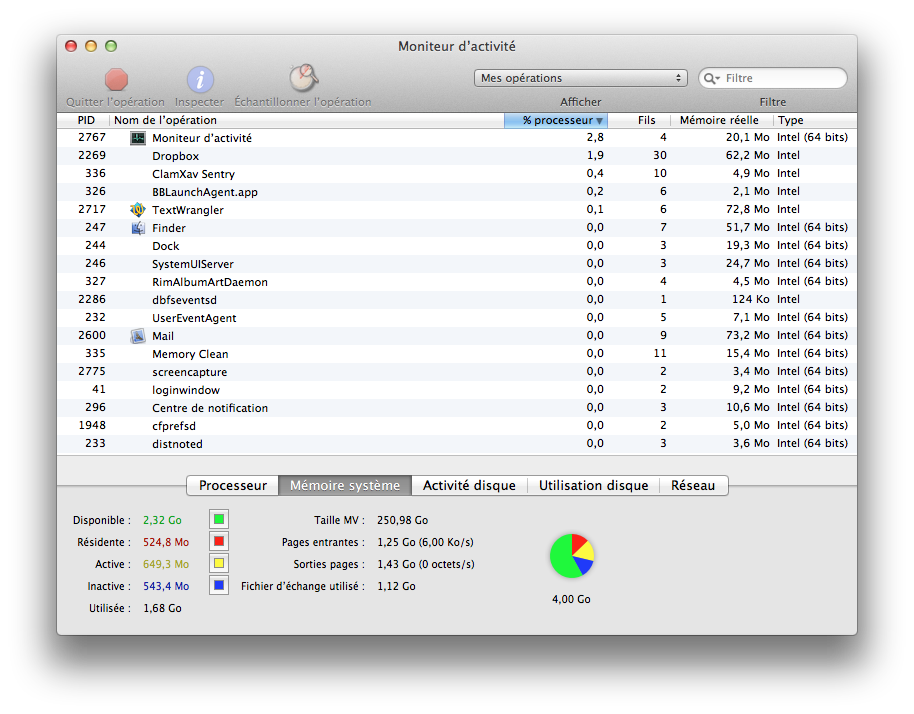
{kind=link}
La documentation VirtualBox précise qu'il est possible de virtualiser du 64 sur du 32, je n'ai pas essayé, je ne sais pas si cela fonctionne bien.
Démarrer VirtualBox et installer Mageia
Le vrai travail commence maintenant
Démarrer VirtaulBox et cliquer sur nouveau. Vous saisissez alors le nom de votre distribution, Mageia 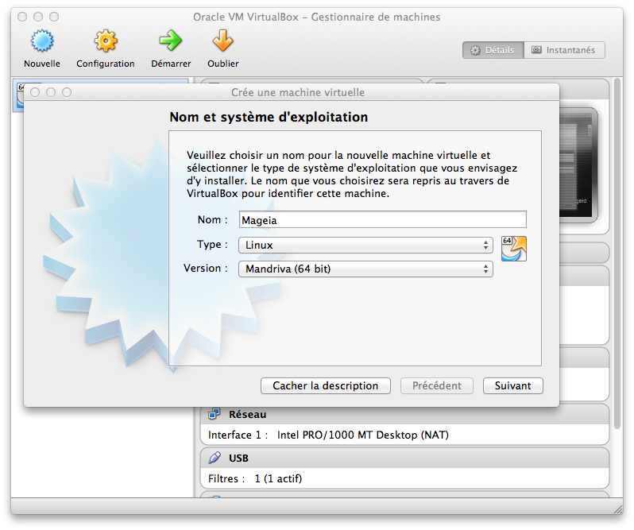
{kind=link}
Ensuite choisissez la taille de la mémoire qui sera utilisé pour faire fonctionner la machine virtuelle. La mémoire vive est partagé avec le système hôte, celle dédiée à VirtualBox ne peut pas être plus de la moitié de la taille totale. Ici, j'ai choisi 2Go. 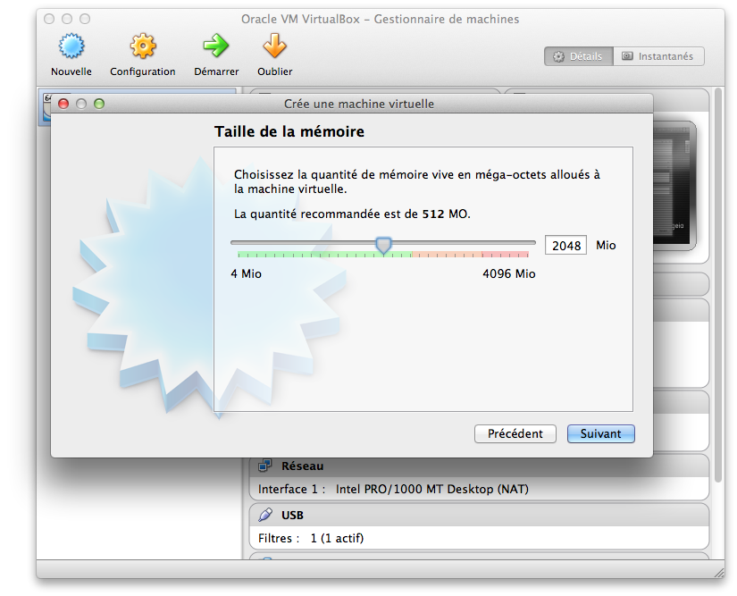
{kind=link}
La création d'un disque dur virtuel est proposée (laissez le paramétrage par défaut) 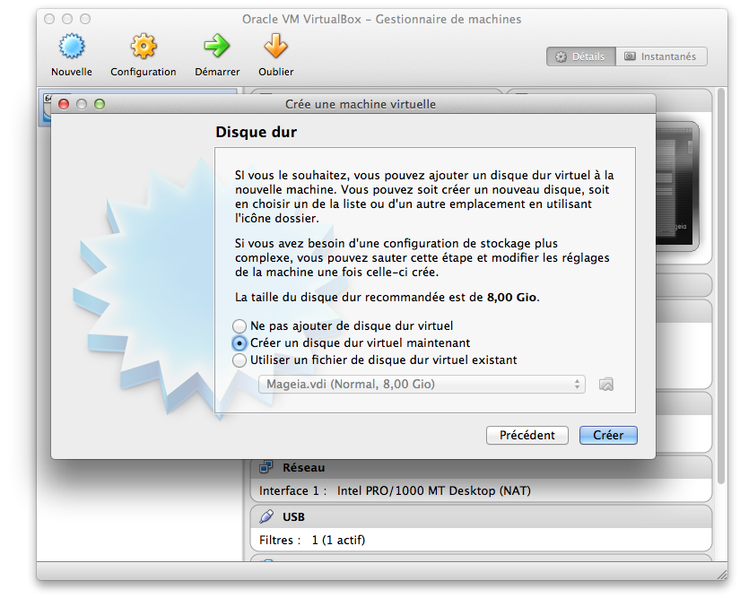
{kind=link}
Il s'agit d'un disque virtuel avec une extension vdi qui permettra plus tard si besoin d'exporter la machine virtuelle 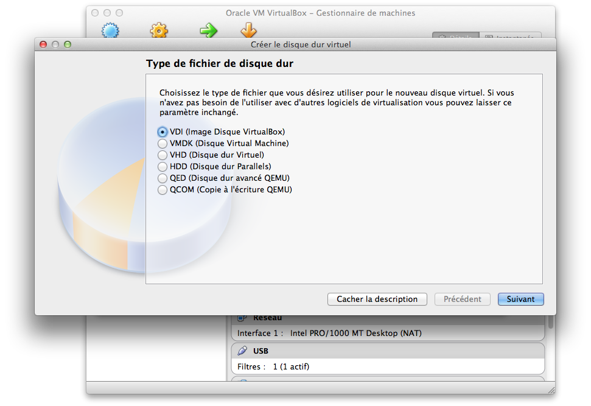
{kind=link}
Conserver le paramétrage de taille de disque dynamiquement allouée. Seul l'espace réellement utilisé sera présent sur le disque dur de la machine hôte. Pour des soucis de performance, il est possible de choisir une taille fixe, mais évidemment, cela prend plus d'espace. A vous de voir. 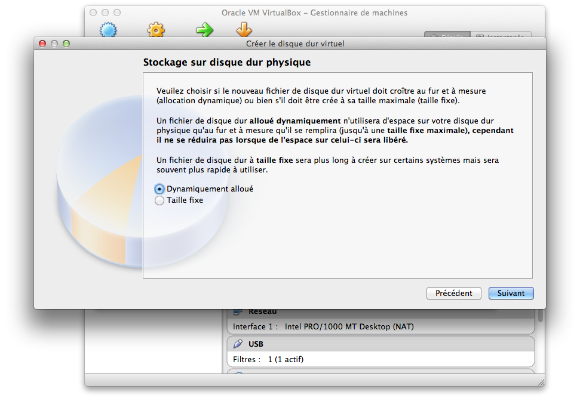
{kind=link}
8Go par défaut, c'est largement suffisant pour tester une distribution. 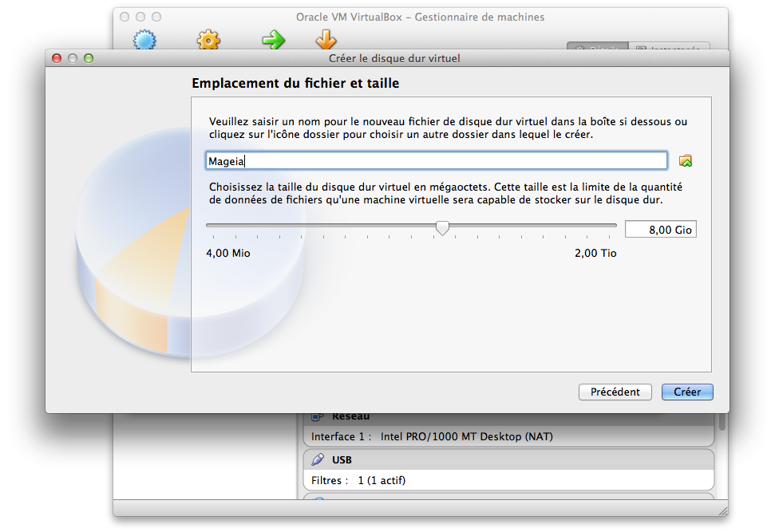
{kind=link}
Une fois tous ces éléments paramétrés, il va falloir demander à la machine de démarrer sur l'image disque de Mageia. Pour cela, il faut se rendre dans l'onglet stockage. 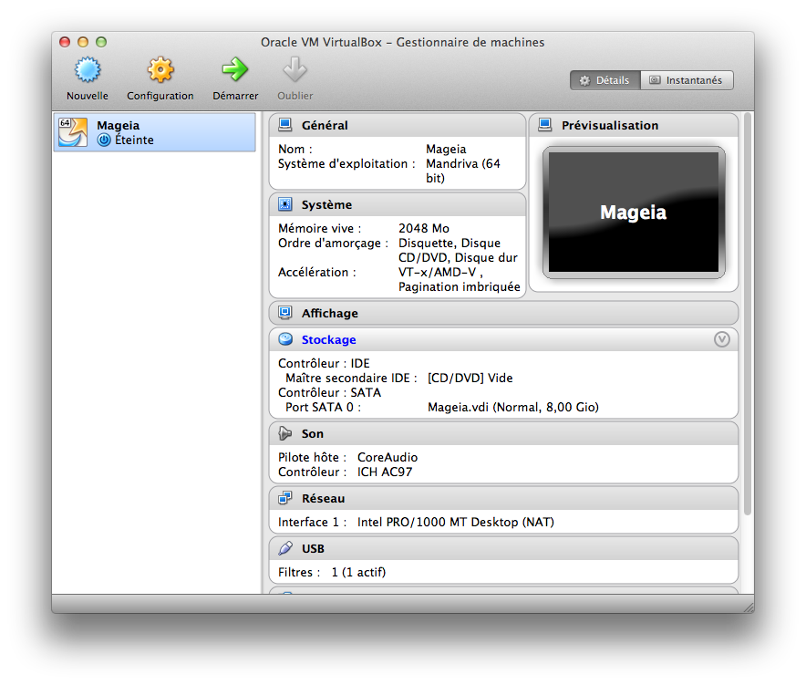
{kind=link}
Vous cliquez sur l'icone du CD à coté de Lecteur CD/DVD. 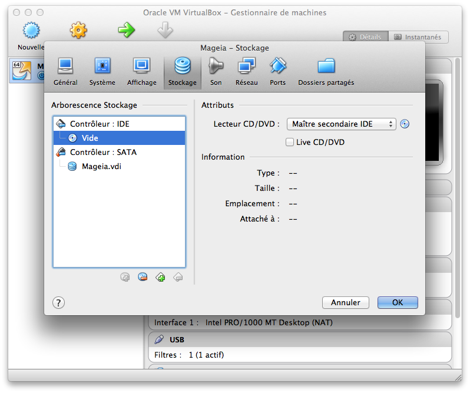
{kind=link}
Et vous choisissez votre fichier iso. 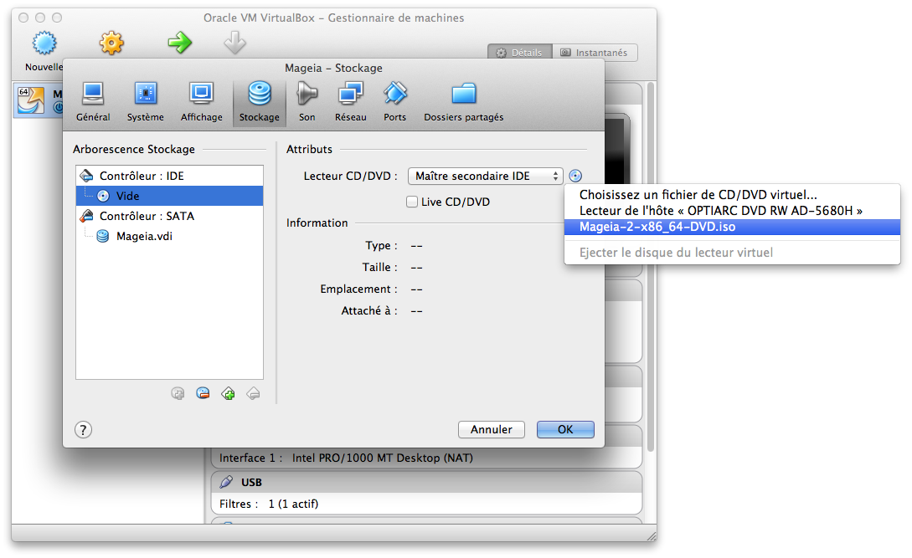
{kind=link}
Vous cliquer alors sur démarrer et lancer l'installation normale de Mageia. Attention, ne télécharger pas les compléments d'installation durant cette étape. C'est très important pour un bon fonctionnement ultérieur de Mageia.
A la fin de l'installation, vous éteignez (power off) la machine virtuelle. 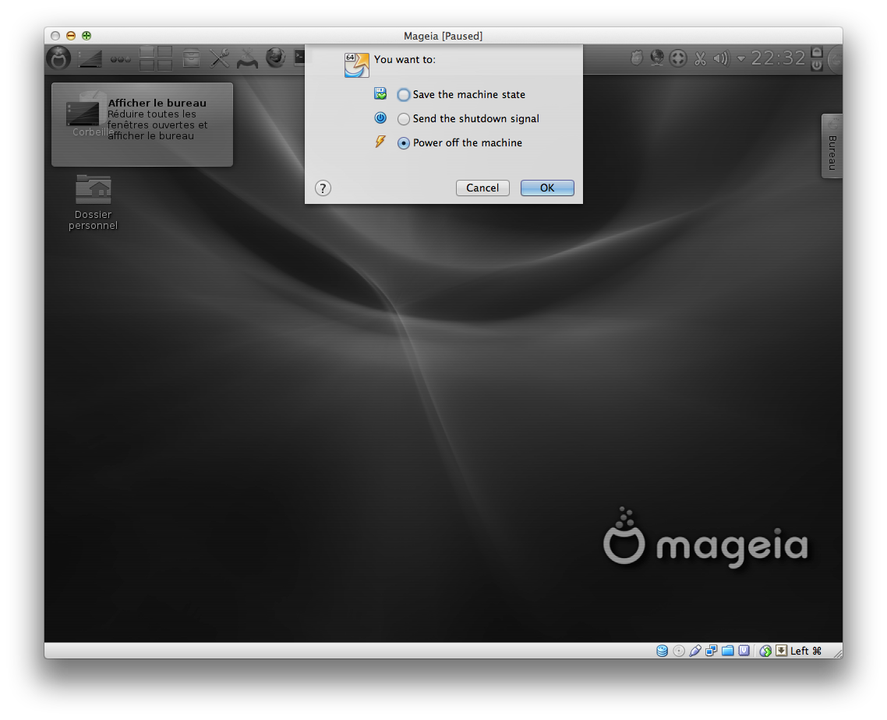
{kind=link}
Puis, vous éjectez le fichier iso (pour ne pas redémarrer l'installation à chaque fois). 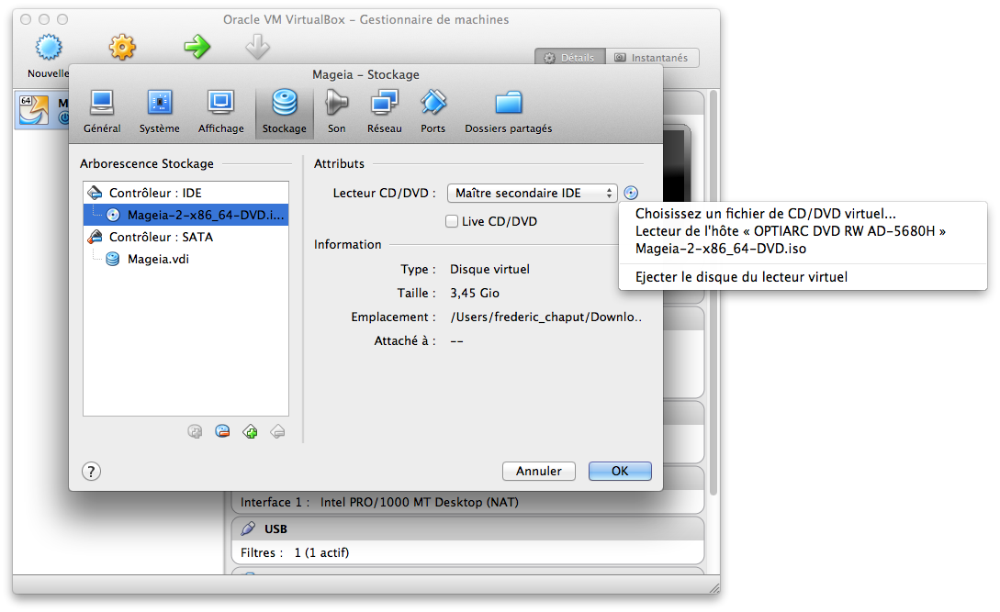
{kind=link}
Vous pouvez alors redémarrer Mageia. Une fois sur Mageia, voici quelques petites astuces pour un fonctionnement optimal de la machine virtuelle :
Guest additions
Tout d'abord, installer les compléments de l'installation que nous avons mis de coté tout à l'heure. L'installation sera plus propre si vous le faites maintenant et évitera des dysfonctionnements de Mageia. Pour éviter d'être embêté avec le fichier iso, vous pouvez aller dans le Centre de Contrôle Mageia (CCM) pour paramétrer les sources des programmes et supprimer la mise à jour par CD.
Mageia va en même temps installer les VirtualBox guest additions qui permettent notamment de partager un répertoire avec le système hôte. Il n'est donc pas nécessaire d'installer spécifiquement ces guest additions, laissez le CCM faire.
Une petite astuce pour les répertoires partagés, n'oubliez pas d'ajouter votre utilisateur dans le groupe VirtualBox (là encore cela se passe dans le CCM). 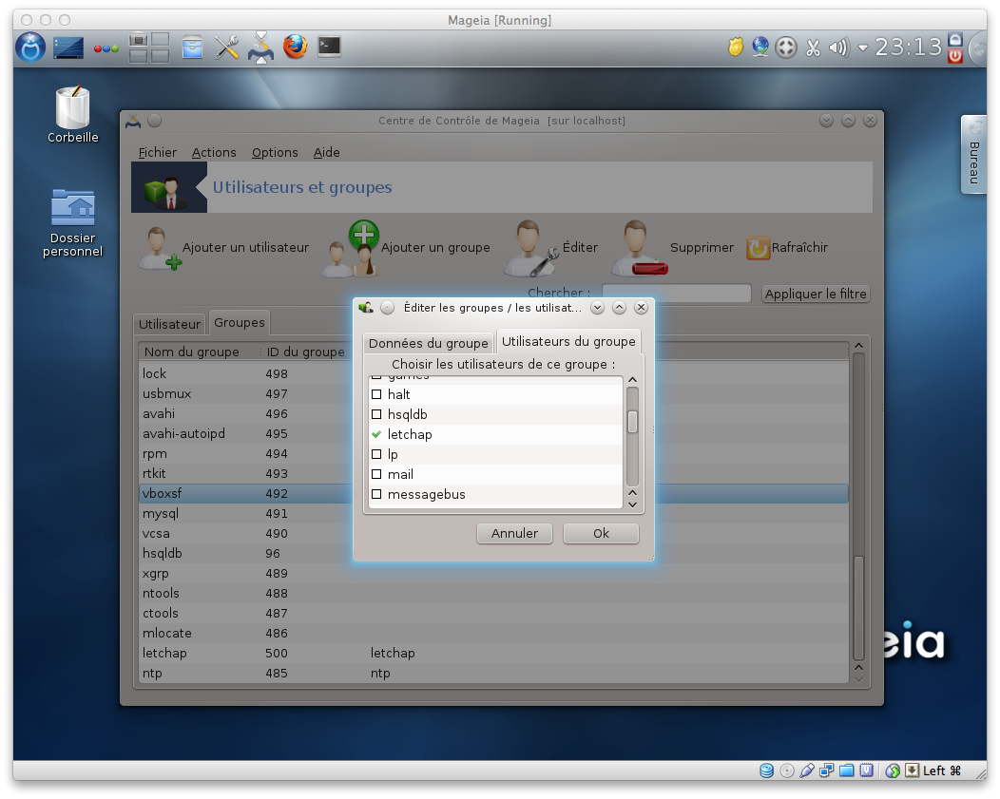
{kind=link}
Extension pack
Enfin, dernière astuce, installer le VirtualBox extension pack pour pouvoir accéder aux ports USB sur la machine invitée.
Bonne virtualisation !!